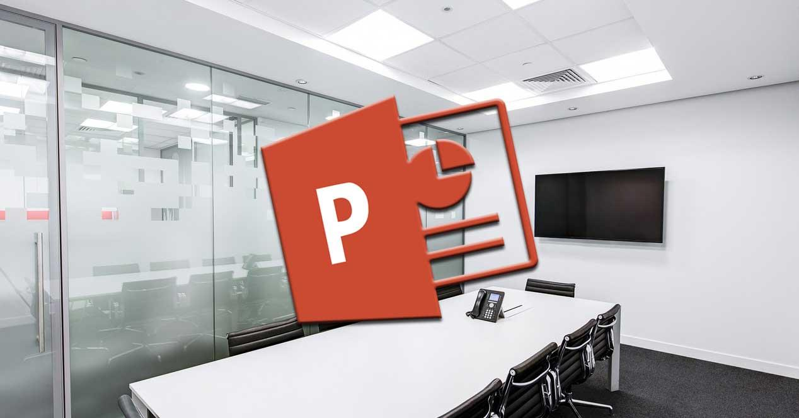
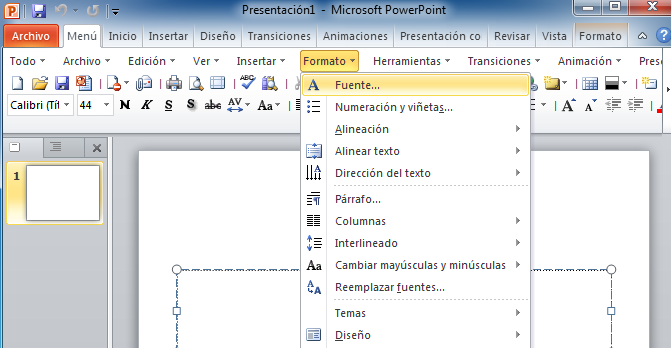
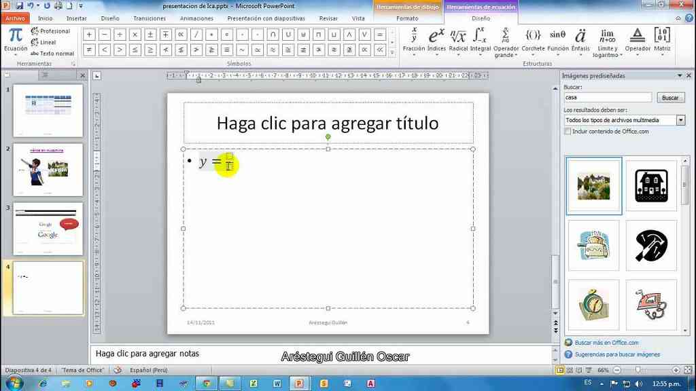
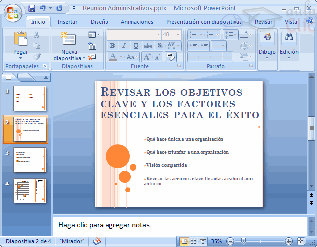

El programa contempla la posibilidad de utilizar texto, imágenes, música y animaciones. De este modo, la creatividad del usuario resulta decisiva para que las presentaciones sean atractivas y consigan mantener la atención del receptor.
Sobre este programa tenemos que decir que viene a girar en torno a tres funciones fundamentales:
Power Point forma parte del paquete de oficina Microsoft Office junto a Word, Excel y otros programas. Por sus características, es la mejor opción ofrecida por Microsoft para dictar una clase, lanzar un producto o comunicar una idea ante una audiencia.
En el ámbito empresarial, para llevar a cabo la presentación de proyectos o de informes de resultados, se utiliza de manera frecuente el software que nos ocupa. No obstante, donde también cada vez se está haciendo más presente es en el campo de la docencia.
Así, son numerosos los profesores que han encontrado en las presentaciones de Power Point la herramienta idónea para desarrollar en clase las distintas asignaturas y sus temas concretos. Y es que traen consigo numerosas ventajas, como estas:
Supongamos que un científico debe brindar una conferencia. Para esto, prepara una presentación con Power Point que exhibe en una pantalla gigante, instalada en el centro del escenario. Mientras el científico habla, la pantalla va mostrando diferentes diapositivas con las ideas principales, gráficos y otras informaciones. El propio disertante se encarga de decidir cuándo pasar a la siguiente diapositiva a través de un mouse, un lápiz óptico u otra herramienta.
Las presentaciones en Power Point también pueden compartirse a través de una computadora, sin necesidad de que se realice un acto público. Un joven puede crear una presentación para saludar a su padre por su cumpleaños y enviársela al homenajeado como un archivo adjunto a un correo electrónico. En estos casos, es probable que surjan problemas de compatibilidad si el receptor no tiene la misma versión de Power Point o que no pueda visualizar el archivo con la presentación si no tiene el programa instalado en su propia computadora.

En esta área superior se presenta el nombre asignado al documento, el nombre del programa y botones de acción rápida (guardar, deshacer, repetir, entre otros).
Son una secuencia de botones en la parte superior que facilita ejecutar ciertos procedimientos, tales como guardar rápidamente el documento; deshacer una acción o un contenido recién formulado; o repetir una diapositiva con animación para verificar cómo se presenta. E incluso, te permite añadir o remover algunas de estas opciones de acceso rápido para que sea más personalizado.
Solía ser un icono de arriba, al lado de la barra de título que te ofrecía información general de funciones y aspectos de powerpoint. En las versiones más recientes, ya no se visualiza sino que se presenta una barra de búsqueda con un icono de bombillo que dice tell me (dime).
Es una interfaz que contiene iconos con ejecuciones. La distribución de los objetos en este bloque va a depender de la opción que se encuentre activada en la barra de menús. Facilitan el trabajo y te permiten acceder instantáneamente cierta opción.
Por ejemplo, si se selecciona en la barra de menú »Revisar», se van a desplegar estas opciones en la barra de herramientas: chequear gramática, diccionario, chequear accesibilidad, traducir, idioma, nuevo comentario, borrar, previo, siguiente, mostrar comentarios, comparar y comenzar entintado. Algunas de éstas opciones pueden que no estén disponibles en ciertas versiones de Powerpoint.
Es un esquema que te muestra los títulos que tienen las diapositivas junto con su enumeración. Además de que, te permite visualizar una miniatura de la diapositiva creada.

Es el área donde se va a trabajar la diapositiva o documento. Permite actualizar, editar y agregar contenido a la hoja seleccionada; y posee una serie de paneles como el de notas y el de zoom, que simplifican el trabajo.
Esta herramienta permite agregar una opinión sobre la diapositiva que se encuentra activada para quien esté encargado de modificar este documento, pueda observar y tomar en consideración su mensaje.
Son unos pequeños botones ubicados en la parte superior derecha de la ventana. Permite reducir el tamaño de la ventana (minimizar), aumentar hasta ocupar el margen de la pantalla (maximizar) y cerrar el documento actual.
Este panel permite que se puede manipular el grado de visión de la página que se esté trabajando en el momento. Posee un símbolo de alejar (representado por menos, -), acercar (símbolo de suma, +) y otro objeto en el medio.
Es una herramienta que contiene una serie de iconos que permite ampliar la página totalmente en la pantalla del ordenador; y cambiar la presentación de cómo se percibe el documento (normal, clasificador de diapositivas, modo lectura y presentación

Es una barra ubicada en la zona inferior de la ventana del documento de powerpoint que muestra información relacionada a la página actual como el número de diapositiva.
Son unos elementos que te permite agregar objetos o dibujos para mejorar la calidad de la presentación.
Se compone de dos columnas (diapositivas y esquema) que te permite ver el orden de las diapositivas.
Es una serie menús u opciones desplegadas ubicados debajo de la barra de títulos. Algunas de éstas opciones son: inicio/archivo, diseño, animaciones, presentación con diapositivas, revisar, vista, barra de búsqueda, compartir y comentarios. Si se accede a uno de éstos menús, se apreciarán cierta cantidad de opciones que permite manipular la diapositiva. Su distribución en la barra y los contenidos disponibles va a depender de la versión de Powerpoint que se tenga.
En algunas versiones antiguas de Office se podía visualizar un botón grande con su logo que te permitía ejecutar algunas opciones en el documento como abrir, guardar, exportar, etc. Pero en las más recientes, aparece simplemente »archivo». Complementos De Estudio